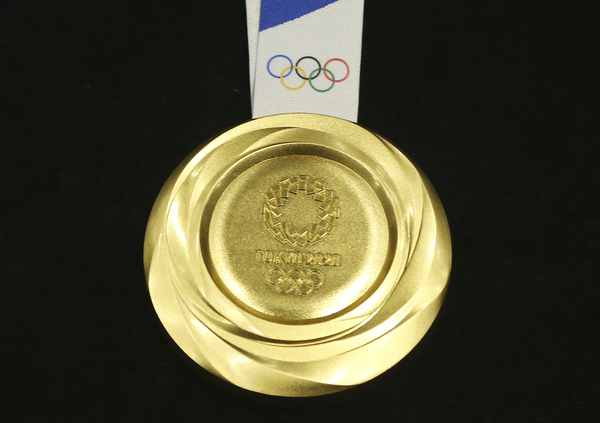

Related information
To make your checking more conveniently, I put the link of other pages here. You can click to find more information.
Click here to get back to the main page.

Achievement
These are my achievements.
- Volunteered over 100 hours at a local community center, organizing events that improved community engagement.
- Led a fundraising campaign for a local charity, raising over $2,000 for health and education projects.
- Placed second in a national essay writing competition, highlighting proficiency in written communication and critical thinking.
- Achieved a GPA of 3.8/4.0 during the first year, placing in the top 10% of the class.
- Elected as Class Representative and effectively voiced student concerns and suggestions in school meetings.